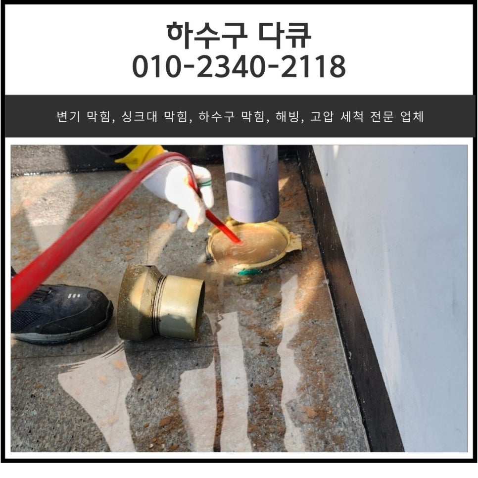
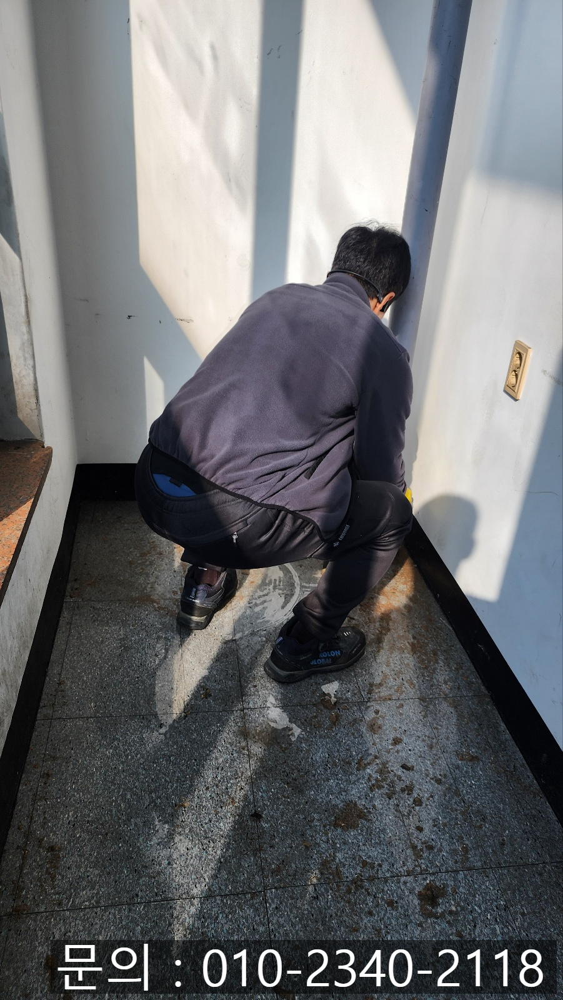
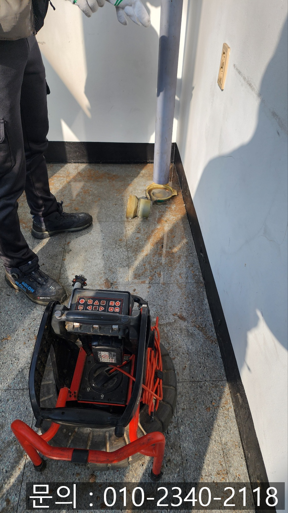
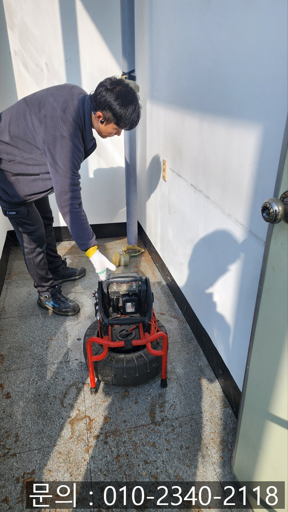
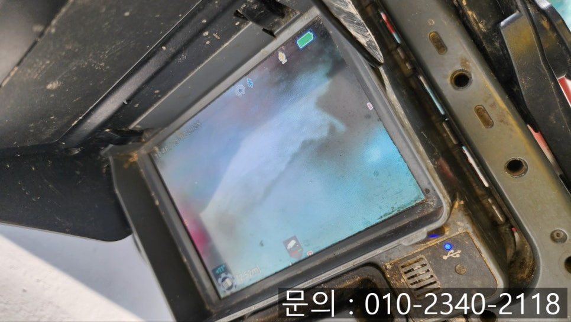
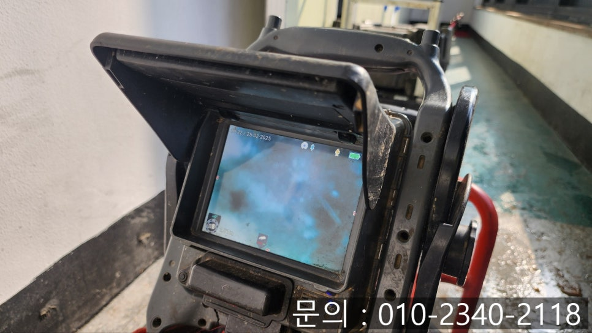
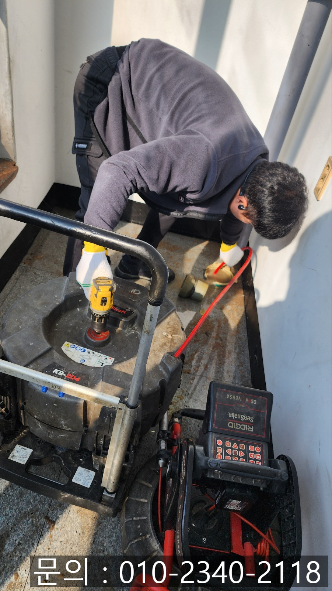

🏠 통복동 하수구 막힘 평택 비전동 상가 건물 배관 역류 뚫어주는 업체
평택 비전동 하수구막힘 전문 시공 후기

📋 작업 개요
- 위치: 평택 비전동, 비전동, 평택
- 서비스 유형: 하수구막힘, 배관막힘, 역류해결, 뚫는업체
- 작업 일시: 2025. 3. 1. 15:50
- 업체명: 하수구수사대 (010-5615-2118)
🔍 문제 상황
안녕하세요.
통복동 하수구 막힘, 평택 비전동 상가 건물
배관 역류 뚫어주는 업체 하수구 다큐입니다.
아파트 건물 하나에도 오수관, 우수관 등의 다양한 배관들이 각자 맡은 일을 소화해 내며 우리의 일상을 불편하지 않게 도와주고 있습니다.
오늘은 다양한 종류의 배관들 중에서 우수관에 대해 알아보고 통복동 하수구 막힘 현장을 소개해 드릴게요.
우수관이란?

🔎 원인 분석
💡 전문가 진단: 우수관이란?
우수관은 빗물이 흘러가는 하수배관입니다.
하늘에서 내린 비가 건물에 고여있지 않고 흘러가 하수구로 보내주는 역할을 하고 있어요.
대부분 건물 옥상 모퉁이나 지하주차장에 위치하고 있어 비가 내릴 때 건물의 옥상이나 지하주차장이 물에 잠기지 않도록 하고 있습니다.
이렇게 건물에서 중요한 역할을 맡고 있는 우수관이 막히게 된다면 비가 많이 내리는 여름 장마철에는 건물 옥상에서 물이 넘치거나 지하주차장에 주차되어 있는 차량이 침수되는 등의 다양한 피해로 이어질 수 있어, 주기적으로 관리가 필요합니다.
오늘 통복동 하수구 막힘으로 다녀온 현장을 소개해 드릴게요.
오래된 상가 건물 복도에 위치한 우수 배관에서 비가 내리지 않는데도 역류가 발생하고 있다며 빨리 방문해달라는 연락을 받았습니다.
고객님께 주소를 전달받고 거의 30분 만에 현장에 도착할 수 있었어요.

🔧 작업 과정
현장에 도착해서 확인해 보니 고객님께서 말씀해 주신 대로 평택 비전동 배관 역류로 인해 복도에 물과 각종 이물질이 바닥에 흘러나온 상태였습니다.
비가 내리지 않았는데 우수관에서 문제가 발생한 것으로 보아 추운 겨울 동안 배관이 얼어있다가 날이 따뜻해지자 배관을 막고 있던 얼음이 녹으면서 밖으로 흘러넘친 것 같아요.
흔하게 발생하는 일은 아니지만 겨울이 지나면서 간혹 발생하는 일로, 배관 내부뿐 아니라 옥상에서도 얼음이 녹아 흘러내린 물이 배관을 타고 흘러가다가 미처 녹지 못한 얼음이나, 물과 함께 흘러들어간 이물질로 인해 막혀 더 이상 내려가지 못하고 역류했던 것 같아요.
정확한 원인 파악을 위해 내시경 카메라를 내부로 진입시켜 확인해 보니 예상했던 대로 배관에 얼음이 얼어있는 상태였고, 옥상에서 흘러들어간 각종 쓰레기와 나뭇잎 등 이물질로 인해 막혀있는 상태였습니다.
평택 비전동 상가 건물 배관 역류 뚫어주는 업체 하수구 다큐는 역류가 발생하게 된 원인과 해결하는 방법에 대해 고객님께 안내해 드린 뒤 작업을 진행하기로 했습니다.
다양한 하수구 막힘 현장을 다니다 보면 하수구에 대해 많은 지식을 갖고 계신 고객님도 있지만, 대부분 잘 모르는 분야이다 보니 배관 역류 뚫어주는 업체 하수구 다큐는 고객님들께 항상 자세히 설명해 드린 다음 작업을 진행하고 있어요.
비전동 상가 건물 배관 역류 현장 역시 고객님께 자세히 안내해 드린 다음 내시경 카메라로 내부를 꼼꼼하게 살펴보면서 플렉스 샤프트 장비를 사용해 뚫어주는 작업을 진행하기로 했습니다.
플렉스 샤프트 장비는 노즐 끝에 단단한 체인이 연결되어 있어 배관 내부에서 강하게 회전하면서 배관 내부에 있는 이물질을 타격해 잘게 부서 주는 역할을 하게 됩니다.
잘게 갈린 이물질의 경우 석션을 사용해 빨아드려 제거하거나 그대로 흘려보내주게 됩니다.
잘게 갈린 이물질이 흘러들어가 다시 막히는 건 아닌가? 하고 걱정하시는 분들도 계신데요.
워낙 잘게 갈아버리다 보니 배관 깊은 곳에서 막힘이 추가로 발생하지 않고 건물 밖으로 흘러나가는 것까지 꼼꼼하게 확인했습니다.


✅ 작업 완료
한참을 반복해서 플렉스 샤프트 장비로 잘게 갈아주는 작업을 진행한 다음 배관이 깨끗해진 것을 확인할 수 있었고요.
옥상으로 올라가 많은 양의 물을 흘려보냈지만 배수 속도가 느리다거나, 막힘, 역류 등이 전혀 발생하지 않는 것을 확인한 다음 작업을 마무리할 수 있었습니다.
경기도 평택시 고덕중앙로 322 4층 129호




⚠️ 하수구 배관 막힘 예방 및 관리 가이드
- ✅ 머리카락, 비닐, 물티슈 등 물에 분해되지 않는 이물질은 하수구 유입을 절대 금지해 주세요.
- ✅ 하수구 거름망을 씌우고 모여진 이물질은 주기적으로 쓰레기통에 바로 비워주셔야 합니다.
- ✅ 배관 노후가 심할 경우 이물질이 더 쉽게 걸리므로 주기적인 배관 세척(고압세척 등)을 권장합니다.
- ✅ 작업 후 1년 이내 재발 시 하수구수사대에서 무상 A/S 보증 서비스를 제공합니다.
💡 핵심 정리
- 확실한 장비 작업(내시경 점검 및 샤프트 스케일링)으로 원인을 뿌리 뽑습니다.
- 작업 후 1년 이내에 동일한 부위 재발 시 100% 무상 A/S 서비스를 보장합니다.
- 서울 · 경기 · 인천 전 지역에 24시간 언제든 긴급 출동할 수 있도록 항시 대기 중입니다.
❓ 자주 묻는 질문 (FAQ)
🚨 평택 비전동 하수구막힘 문제로 고민이신가요?
정확한 원인 진단과 확실한 시공으로 재발 없는 해결을 약속드립니다.
24시간 긴급 출동 | 서울 · 경기 · 인천 전지역 | 1년 내 재발 시 무상 A/S